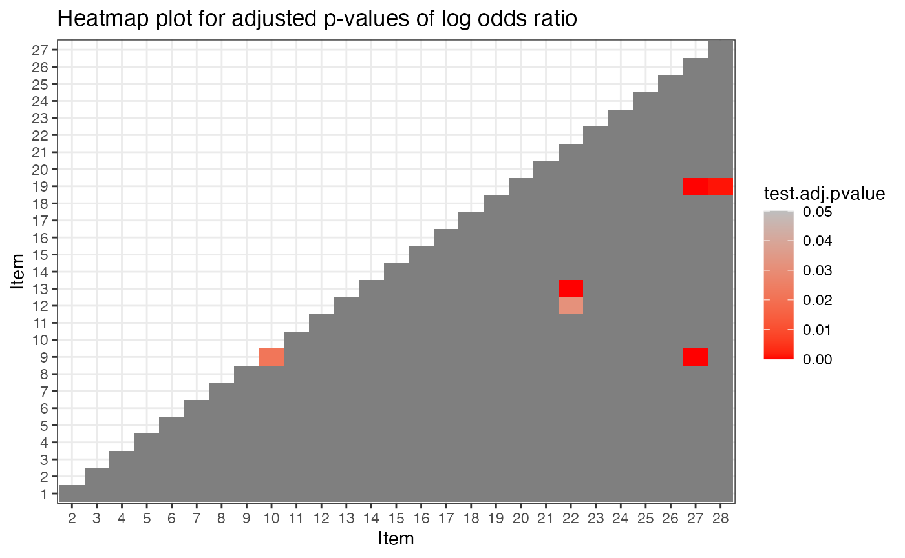
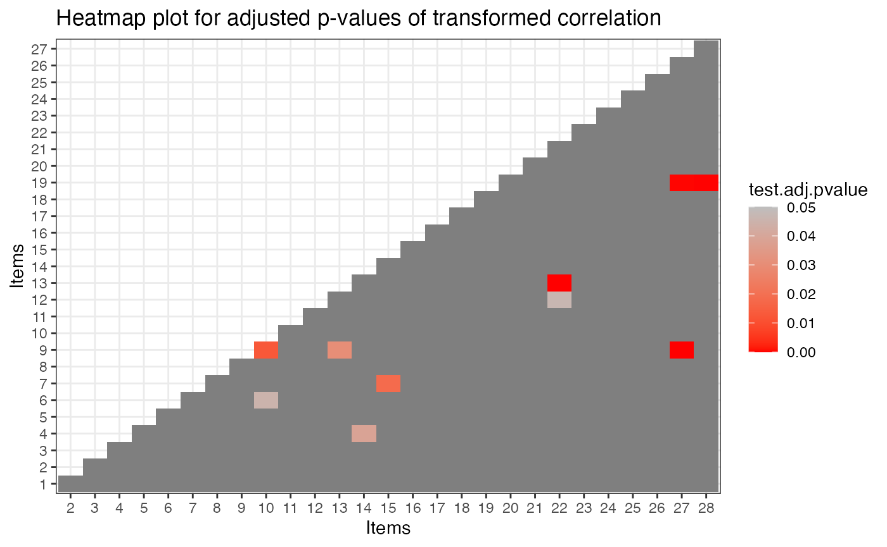

Introduction
This tutorial is created using R markdown and knitr. It illustrates how to use the GDINA R package (version 2.12.1) for model-data fit evaluation.
We use the ECPE data for illustration and fit the GDINA model to the data first.
Model Estimation
The following code estimates the G-DINA model.
## GDINA R Package (version 2.12.1; 2026-07-05)
## For tutorials, see https://wenchao-ma.github.io/GDINA
dat <- realdata_ECPE$dat
Q <- realdata_ECPE$Q
# Estimating GDINA model
est <- GDINA(dat = dat, Q = Q, model = "GDINA", mono.constraint = TRUE)## Iter = 1 Max. abs. change = 0.55686 Deviance = 104532.86 Iter = 2 Max. abs. change = 0.11088 Deviance = 86976.20 Iter = 3 Max. abs. change = 0.05206 Deviance = 86497.72 Iter = 4 Max. abs. change = 0.04996 Deviance = 86216.54 Iter = 5 Max. abs. change = 0.04826 Deviance = 86028.82 Iter = 6 Max. abs. change = 0.04407 Deviance = 85896.92 Iter = 7 Max. abs. change = 0.03953 Deviance = 85801.84 Iter = 8 Max. abs. change = 0.03524 Deviance = 85731.99 Iter = 9 Max. abs. change = 0.03131 Deviance = 85679.83 Iter = 10 Max. abs. change = 0.02774 Deviance = 85640.31 Iter = 11 Max. abs. change = 0.02453 Deviance = 85609.98 Iter = 12 Max. abs. change = 0.02166 Deviance = 85586.45 Iter = 13 Max. abs. change = 0.01914 Deviance = 85567.96 Iter = 14 Max. abs. change = 0.01692 Deviance = 85553.37 Iter = 15 Max. abs. change = 0.01500 Deviance = 85541.72 Iter = 16 Max. abs. change = 0.01335 Deviance = 85532.33 Iter = 17 Max. abs. change = 0.01194 Deviance = 85524.70 Iter = 18 Max. abs. change = 0.01071 Deviance = 85518.45 Iter = 19 Max. abs. change = 0.00963 Deviance = 85513.30 Iter = 20 Max. abs. change = 0.00872 Deviance = 85509.02 Iter = 21 Max. abs. change = 0.00792 Deviance = 85505.43 Iter = 22 Max. abs. change = 0.00723 Deviance = 85502.39 Iter = 23 Max. abs. change = 0.00663 Deviance = 85499.81 Iter = 24 Max. abs. change = 0.00610 Deviance = 85497.61 Iter = 25 Max. abs. change = 0.00563 Deviance = 85495.70 Iter = 26 Max. abs. change = 0.00521 Deviance = 85494.05 Iter = 27 Max. abs. change = 0.00484 Deviance = 85492.62 Iter = 28 Max. abs. change = 0.00450 Deviance = 85491.36 Iter = 29 Max. abs. change = 0.00420 Deviance = 85490.25 Iter = 30 Max. abs. change = 0.00393 Deviance = 85489.28 Iter = 31 Max. abs. change = 0.00368 Deviance = 85488.41 Iter = 32 Max. abs. change = 0.00346 Deviance = 85487.63 Iter = 33 Max. abs. change = 0.00325 Deviance = 85486.94 Iter = 34 Max. abs. change = 0.00307 Deviance = 85486.32 Iter = 35 Max. abs. change = 0.00290 Deviance = 85485.76 Iter = 36 Max. abs. change = 0.00274 Deviance = 85485.26 Iter = 37 Max. abs. change = 0.00260 Deviance = 85484.80 Iter = 38 Max. abs. change = 0.00247 Deviance = 85484.39 Iter = 39 Max. abs. change = 0.00235 Deviance = 85484.01 Iter = 40 Max. abs. change = 0.00224 Deviance = 85483.67 Iter = 41 Max. abs. change = 0.00212 Deviance = 85483.36 Iter = 42 Max. abs. change = 0.00202 Deviance = 85483.07 Iter = 43 Max. abs. change = 0.00194 Deviance = 85482.81 Iter = 44 Max. abs. change = 0.00188 Deviance = 85482.56 Iter = 45 Max. abs. change = 0.00182 Deviance = 85482.34 Iter = 46 Max. abs. change = 0.00175 Deviance = 85482.14 Iter = 47 Max. abs. change = 0.00172 Deviance = 85481.96 Iter = 48 Max. abs. change = 0.00166 Deviance = 85481.79 Iter = 49 Max. abs. change = 0.00161 Deviance = 85481.63 Iter = 50 Max. abs. change = 0.00156 Deviance = 85481.49 Iter = 51 Max. abs. change = 0.00150 Deviance = 85481.36 Iter = 52 Max. abs. change = 0.00144 Deviance = 85481.24 Iter = 53 Max. abs. change = 0.00139 Deviance = 85481.12 Iter = 54 Max. abs. change = 0.00133 Deviance = 85481.02 Iter = 55 Max. abs. change = 0.00128 Deviance = 85480.92 Iter = 56 Max. abs. change = 0.00121 Deviance = 85480.83 Iter = 57 Max. abs. change = 0.00116 Deviance = 85480.75 Iter = 58 Max. abs. change = 0.00109 Deviance = 85480.67 Iter = 59 Max. abs. change = 0.00106 Deviance = 85480.59 Iter = 60 Max. abs. change = 0.00102 Deviance = 85480.53 Iter = 61 Max. abs. change = 0.00098 Deviance = 85480.46 Iter = 62 Max. abs. change = 0.00094 Deviance = 85480.40 Iter = 63 Max. abs. change = 0.00090 Deviance = 85480.35 Iter = 64 Max. abs. change = 0.00086 Deviance = 85480.29 Iter = 65 Max. abs. change = 0.00044 Deviance = 85480.24 Iter = 66 Max. abs. change = 0.00087 Deviance = 85480.20 Iter = 67 Max. abs. change = 0.00082 Deviance = 85480.16 Iter = 68 Max. abs. change = 0.00036 Deviance = 85480.12 Iter = 69 Max. abs. change = 0.00082 Deviance = 85480.08 Iter = 70 Max. abs. change = 0.00031 Deviance = 85480.04 Iter = 71 Max. abs. change = 0.00080 Deviance = 85480.01 Iter = 72 Max. abs. change = 0.00029 Deviance = 85479.98 Iter = 73 Max. abs. change = 0.00077 Deviance = 85479.95 Iter = 74 Max. abs. change = 0.00026 Deviance = 85479.92 Iter = 75 Max. abs. change = 0.00074 Deviance = 85479.90 Iter = 76 Max. abs. change = 0.00024 Deviance = 85479.87 Iter = 77 Max. abs. change = 0.00025 Deviance = 85479.85 Iter = 78 Max. abs. change = 0.00023 Deviance = 85479.83 Iter = 79 Max. abs. change = 0.00022 Deviance = 85479.81 Iter = 80 Max. abs. change = 0.00022 Deviance = 85479.79 Iter = 81 Max. abs. change = 0.00076 Deviance = 85479.77 Iter = 82 Max. abs. change = 0.00032 Deviance = 85479.75 Iter = 83 Max. abs. change = 0.00070 Deviance = 85479.74 Iter = 84 Max. abs. change = 0.00032 Deviance = 85479.72 Iter = 85 Max. abs. change = 0.00019 Deviance = 85479.71 Iter = 86 Max. abs. change = 0.00025 Deviance = 85479.69 Iter = 87 Max. abs. change = 0.00068 Deviance = 85479.68 Iter = 88 Max. abs. change = 0.00015 Deviance = 85479.67 Iter = 89 Max. abs. change = 0.00060 Deviance = 85479.66 Iter = 90 Max. abs. change = 0.00030 Deviance = 85479.64 Iter = 91 Max. abs. change = 0.00056 Deviance = 85479.63 Iter = 92 Max. abs. change = 0.00014 Deviance = 85479.62 Iter = 93 Max. abs. change = 0.00052 Deviance = 85479.61 Iter = 94 Max. abs. change = 0.00026 Deviance = 85479.61 Iter = 95 Max. abs. change = 0.00025 Deviance = 85479.60 Iter = 96 Max. abs. change = 0.00051 Deviance = 85479.59 Iter = 97 Max. abs. change = 0.00011 Deviance = 85479.58 Iter = 98 Max. abs. change = 0.00011 Deviance = 85479.57 Iter = 99 Max. abs. change = 0.00020 Deviance = 85479.57 Iter = 100 Max. abs. change = 0.00012 Deviance = 85479.56 Iter = 101 Max. abs. change = 0.00010 Deviance = 85479.55 Iter = 102 Max. abs. change = 0.00010 Deviance = 85479.55Model fit at test-level
The model-data fit at test level can be obtained using
modelfit() function. This function calculates
statistic for G-DINA model with dichotmous responses (Liu, Tian, &
Xin, 2016; Hansen, Cai, Monroe, & Li, 2016) and for sequential
G-DINA model with graded responses (Ma, 2020). It also calculates SRMSR
and RMSEA2.
modelfit(est)## Test-level Model Fit Evaluation
##
## Relative fit statistics:
## -2 log likelihood = 85479.54 ( number of parameters = 81 )
## AIC = 85641.54 BIC = 86125.93
## CAIC = 86206.93 SABIC = 85868.56
##
## Absolute fit statistics:
## M2 = 505.956 df = 325 p = 0
## RMSEA2 = 0.0138 with 90 % CI: [ 0.0114 , 0.0161 ]
## SRMSR = 0.0317Interestingly, itemfit() also provide model-data fit at
test level. By default, it prints the maximum z statistics for
transformed correlation and log odds ratio for item-pairs, which
quantify the “worst” fit.
itemfit(est)## Summary of Item Fit Analysis
##
## Call:
## itemfit(GDINA.obj = est)
##
## mean[stats] max[stats] max[z.stats] p-value adj.p-value
## Item mean score 0.0008 0.0023 0.2957 0.7675 1
## Transformed correlation 0.0255 0.1175 6.3507 0.0000 0
## Log odds ratio 0.1344 0.5346 6.5320 0.0000 0
## Note: p-value and adj.p-value are associated with max[z.stats].
## adj.p-values are based on the holm method.Model-data fit at item-pair level
itemfit() also provide model-data fit at item-pair
level. The heatmap plots for transformed correlation and log odds ratio
show the p-values of test statistics for all item pairs. A significant
(red) test statistic indicates some misfit.


Model data fit at item level
Model data fit can also be evaluated at item level. The code below gives the maximum z statistics for transformed correlation and log odds ratio at item level and thus can be viewed as the “worst” fit for item pairs related to that specific item.
ift <- itemfit(est)
ift$max.itemlevel.fit## z.prop pvalue[z.prop] max[z.r] pvalue.max[z.r] adj.pvalue.max[z.r]
## Item 1 0.1237 0.9016 2.9270 0.0034 0.0924
## Item 2 0.2957 0.7675 2.7867 0.0053 0.1438
## Item 3 0.0450 0.9641 2.6031 0.0092 0.2494
## Item 4 0.2033 0.8389 3.8789 0.0001 0.0028
## Item 5 0.1021 0.9187 2.9541 0.0031 0.0847
## Item 6 0.0689 0.9451 3.8416 0.0001 0.0033
## Item 7 0.0696 0.9445 4.0594 0.0000 0.0013
## Item 8 0.0297 0.9763 3.6019 0.0003 0.0085
## Item 9 0.0601 0.9521 6.3507 0.0000 0.0000
## Item 10 0.2612 0.7939 4.1447 0.0000 0.0009
## Item 11 0.1286 0.8977 2.8119 0.0049 0.1330
## Item 12 0.1269 0.8990 3.8341 0.0001 0.0034
## Item 13 0.1686 0.8661 5.5811 0.0000 0.0000
## Item 14 0.1396 0.8890 3.8789 0.0001 0.0028
## Item 15 0.0475 0.9622 4.0594 0.0000 0.0013
## Item 16 0.0104 0.9917 3.4300 0.0006 0.0163
## Item 17 0.1718 0.8636 3.2008 0.0014 0.0370
## Item 18 0.0322 0.9743 3.7131 0.0002 0.0055
## Item 19 0.0280 0.9777 5.2098 0.0000 0.0000
## Item 20 0.0923 0.9265 2.9925 0.0028 0.0747
## Item 21 0.0456 0.9637 3.6700 0.0002 0.0065
## Item 22 0.0723 0.9424 5.5811 0.0000 0.0000
## Item 23 0.1219 0.9030 3.7131 0.0002 0.0055
## Item 24 0.0371 0.9704 2.5920 0.0095 0.2577
## Item 25 0.0348 0.9722 3.1154 0.0018 0.0496
## Item 26 0.0659 0.9474 2.8096 0.0050 0.1339
## Item 27 0.2550 0.7987 6.3507 0.0000 0.0000
## Item 28 0.0702 0.9440 5.2098 0.0000 0.0000
## max[z.logOR] pvalue.max[z.logOR] adj.pvalue.max[z.logOR]
## Item 1 2.6655 0.0077 0.2075
## Item 2 2.7087 0.0068 0.1824
## Item 3 2.5780 0.0099 0.2683
## Item 4 3.7650 0.0002 0.0045
## Item 5 2.5767 0.0100 0.2693
## Item 6 3.6250 0.0003 0.0078
## Item 7 3.6175 0.0003 0.0080
## Item 8 2.9915 0.0028 0.0749
## Item 9 6.5320 0.0000 0.0000
## Item 10 4.0180 0.0001 0.0016
## Item 11 2.6752 0.0075 0.2016
## Item 12 3.9309 0.0001 0.0023
## Item 13 5.3708 0.0000 0.0000
## Item 14 3.7650 0.0002 0.0045
## Item 15 3.6175 0.0003 0.0080
## Item 16 3.1674 0.0015 0.0415
## Item 17 2.6478 0.0081 0.2187
## Item 18 3.2149 0.0013 0.0352
## Item 19 5.1644 0.0000 0.0000
## Item 20 3.0657 0.0022 0.0586
## Item 21 3.3901 0.0007 0.0189
## Item 22 5.3708 0.0000 0.0000
## Item 23 3.2149 0.0013 0.0352
## Item 24 2.5664 0.0103 0.2774
## Item 25 3.0553 0.0022 0.0607
## Item 26 2.6655 0.0077 0.2075
## Item 27 6.5320 0.0000 0.0000
## Item 28 4.6889 0.0000 0.0001Item fit can also be evaluated using itemfitPD()
function. This function calculate item fit statistics from the
power-divergence family (Najera, Ma, Sorrel and Abad, 2025). This
function can use bootstrap methods with Stone correction. Parallel
computing is supported on computers with multiple cores.
ipd <- itemfitPD(est, bootstrap = TRUE, Stone = TRUE, R = 1000, cores=10)
ipd## ======================================================
## Item fit indices from the power-divergence (PD) family
## ======================================================
## Bootstrapping = TRUE
## Stone's method = TRUE
## # of bootstrapped samples = 1000
## # of cores used = 10
## Time used = 1.092189
## p-value adjustment method = holm
## -------------------------------------
## Items flagged for misfit (at .05 nominal level):
## Based on X2: 4, 6, 9, 10, 13, 14, 19, 22, 27, 28
## Based on G2: 4, 6, 9, 10, 13, 14, 19, 22, 27, 28
## Based on PD: 4, 6, 9, 10, 13, 14, 19, 22, 27, 28To find the test statistics and p-value, the following code can be used:
ipd$PD## item stat p adjp
## 1 1 0.8917 0.238 1.000
## 2 2 1.6997 0.275 1.000
## 3 3 1.4434 0.038 0.532
## 4 4 10.0010 0.000 0.000
## 5 5 0.8789 0.680 1.000
## 6 6 7.9035 0.000 0.000
## 7 7 0.2729 0.526 1.000
## 8 8 1.1988 0.410 1.000
## 9 9 24.3739 0.000 0.000
## 10 10 6.6309 0.001 0.021
## 11 11 0.3386 0.565 1.000
## 12 12 0.2168 0.700 1.000
## 13 13 22.9105 0.000 0.000
## 14 14 10.5711 0.001 0.021
## 15 15 5.7099 0.007 0.126
## 16 16 1.0051 0.088 1.000
## 17 17 2.7390 0.020 0.300
## 18 18 3.5967 0.051 0.663
## 19 19 11.9975 0.000 0.000
## 20 20 0.7102 0.221 1.000
## 21 21 0.5420 0.358 1.000
## 22 22 15.7013 0.000 0.000
## 23 23 1.8662 0.102 1.000
## 24 24 3.6344 0.014 0.224
## 25 25 2.7058 0.111 1.000
## 26 26 5.2976 0.008 0.136
## 27 27 6.8122 0.002 0.038
## 28 28 6.5452 0.000 0.000## R version 4.6.1 (2026-06-24)
## Platform: aarch64-apple-darwin23
## Running under: macOS Tahoe 26.5.1
##
## Matrix products: default
## BLAS: /Library/Frameworks/R.framework/Versions/4.6/Resources/lib/libRblas.0.dylib
## LAPACK: /Library/Frameworks/R.framework/Versions/4.6/Resources/lib/libRlapack.dylib; LAPACK version 3.12.1
##
## locale:
## [1] C.UTF-8/C.UTF-8/C.UTF-8/C/C.UTF-8/C.UTF-8
##
## time zone: America/Chicago
## tzcode source: internal
##
## attached base packages:
## [1] stats graphics grDevices utils datasets methods base
##
## other attached packages:
## [1] GDINA_2.12.1
##
## loaded via a namespace (and not attached):
## [1] generics_0.1.4 sass_0.4.10 future_1.70.0
## [4] listenv_1.0.0 digest_0.6.39 magrittr_2.0.5
## [7] RColorBrewer_1.1-3 evaluate_1.0.5 grid_4.6.1
## [10] iterators_1.0.14 fastmap_1.2.0 foreach_1.5.2
## [13] jsonlite_2.0.0 promises_1.5.0 scales_1.4.0
## [16] truncnorm_1.0-9 codetools_0.2-20 numDeriv_2016.8-1.1
## [19] textshaping_1.0.5 jquerylib_0.1.4 shinydashboard_0.7.3
## [22] cli_3.6.6 shiny_1.14.0 rlang_1.3.0
## [25] parallelly_1.48.0 future.apply_1.20.2 withr_3.0.3
## [28] cachem_1.1.0 yaml_2.3.12 otel_0.2.0
## [31] tools_4.6.1 parallel_4.6.1 nloptr_2.2.1
## [34] dplyr_1.2.1 ggplot2_4.0.3 httpuv_1.6.17
## [37] globals_0.19.1 vctrs_0.7.3 R6_2.6.1
## [40] mime_0.13 lifecycle_1.0.5 fs_2.1.0
## [43] htmlwidgets_1.6.4 MASS_7.3-65 Rsolnp_2.0.1
## [46] ragg_1.5.2 pkgconfig_2.0.3 desc_1.4.3
## [49] pillar_1.11.1 pkgdown_2.2.0 bslib_0.11.0
## [52] later_1.4.8 gtable_0.3.6 glue_1.8.1
## [55] Rcpp_1.1.2 systemfonts_1.3.2 tidyselect_1.2.1
## [58] tibble_3.3.1 xfun_0.59 knitr_1.51
## [61] farver_2.1.2 xtable_1.8-8 htmltools_0.5.9
## [64] labeling_0.4.3 rmarkdown_2.31 compiler_4.6.1
## [67] S7_0.2.2 alabama_2025.1.0References
Chen, J., de la Torre, J., & Zhang, Z. (2013). Relative and Absolute Fit Evaluation in Cognitive Diagnosis Modeling. Journal of Educational Measurement, 50, 123-140.
Hansen, M., Cai, L., Monroe, S., & Li, Z. (2016). Limited-information goodness-of-fit testing of diagnostic classification item response models. British Journal of Mathematical and Statistical Psychology. 69, 225–252.
Liu, Y., Tian, W., & Xin, T. (2016). An Application of M2 Statistic to Evaluate the Fit of Cognitive Diagnostic Models. Journal of Educational and Behavioral Statistics, 41, 3-26.
Ma, W. (2020). Evaluating the fit of sequential G-DINA model using limited-information measures. Applied Psychological Measurement, 44, 167-181.
Ma, W., & de la Torre, J. (2020). GDINA: An R Package for Cognitive Diagnosis Modeling. Journal of Statistical Software, 93(14), 1-26.
Maydeu-Olivares, A. (2013). Goodness-of-Fit Assessment of Item Response Theory Models. Measurement, 11, 71-101.
Nájera, P., Ma, W., Sorrel, M.A. et al. Assessing item-level fit for the sequential G-DINA model. Behaviormetrika (2025). https://doi.org/10.1007/s41237-025-00263-8